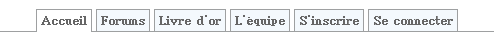

Dans ce tutoriel, vous allez apprendre à créer des menus en onglets de façon très simple en xHTML et CSS. En fait, c'est un complément au tutoriel de neoxx78 sur les menus horizontaux. Cependant, il n'est pas nécessaire de l'avoir lu :-° mais celui sur le XHTML/CSS de M@teo21 doit l'être :( .
L'exemple qui servira tout au long de ce tutoriel sera le menu du Site du Zér0.
La partie XHTML est la plus simple. En effet, nous allons juste créer un menu avec une liste non-ordonnée avec <ul> et <li>. Ensuite, dans un menu, il y forcément des liens, on utilisera donc aussi la balise <a>. L'attribut class nous servira à mettre en valeur l'onglet actif. Le tout sera englobé avec une balise <div>.
Les trois éléments importants sont : l'activation d'un lien avec class="active", la balise <div id="menu"> qui nous permettra de positionner le menu dans la page, et la balise <ul id="onglets"> qui servira à faire les modifications sur le style.
Si on ouvrait maintenant une page avec ce code, on aurait ceci :
Comme vous le voyez, c'est un menu très simple. :lol:
Voilà qui clôt la partie XHTML. Jusque-là, ce n'est pas très compliqué :) , mais rassurez-vous, la suite sera du même niveau ;) !
Passons directement au code, les explications suivront. :)
#onglets
{
font : bold 11px Batang, arial, serif;
list-style-type : none;
padding-bottom : 24px; /* à modifier suivant la taille de la police ET de la hauteur de l'onglet dans #onglets li */
border-bottom : 1px solid #9EA0A1;
margin-left : 0;
}
Ici, je change principalement la police, j'enlève les puces, je mets une bordure qui sera en bas des cellules. Le padding-bottom sert à indiquer à quelle «hauteur» sera la bordure du bas. Pour mieux visualiser, vous pouvez changer cette valeur et vous comprendrez tout de suite ! ;) Je fais également en sorte que le menu soit collé au bord gauche de la page.
#onglets li
{
float : left;
height : 21px; /* à modifier suivant la taille de la police pour centrer le texte dans l'onglet */
background-color: #F4F9FD;
margin : 2px 2px 0 2px !important; /* Pour les navigateurs autre que IE */
margin : 1px 2px 0 2px; /* Pour IE */
border : 1px solid #9EA0A1;
}
Ici, je crée mes onglets o_O . Or, mes onglets se trouvent entre des balises <li>, donc il faut mettre #onglets li. Je crée mes onglets en mettant : border:1px solid #9EA0A1 (cadre de 1 pixel en ligne pleine de couleur #9EA0A1 ;) ) . Je rajoute également une petite marge pour que les cellules et le texte ne soient pas collés.
Le float : left me sert à mettre mes onglets sur la même ligne.
Il faut aussi préciser la hauteur de la cellule.
Les deux margin servent pour l'affichage : en effet, Internet Explorer n'interprète pas de la même façon que les autres navigateurs ! Bien, on se rapproche du but ! :)
Là, je sélectionne les onglets qui ont pour id menu. Comme chaque onglet se trouve entre des balises <li>, je les sélectionne aussi. Comme je veux que quand celui-ci est activé, qu'il ait une apparence différente, je sélectionne aussi la classe active. Donc, je modifie juste l'apparence de l'onglet quand celui-ci est activé en mettant une couleur de fond, et en ajoutant une bordure en bas de cellule, qui aura pour effet d'effacer celle existante, mais juste sur la largeur de cette cellule.
#onglets a
{
display : block;
color : #666;
text-decoration : none;
padding : 4px;
}
Là, je me trouve dans les onglets et je travaille sur les liens. On fait ici un affichage bloc, ça permet de pouvoir cliquer partout dans l'onglet pour activer le lien. La couleur du lien se change aussi ici. Le text-decoration : none sert à enlever le trait de soulignement en dessous des liens. Enfin, on met une marge aux quatre bords des cellules, donc padding : 4px.
Et la touche finale : quand on passe avec la souris dessus, le fond change de couleur : :D , il faut donc se placer dans l'id onglet avec a:hover pour le lien.
#onglets a:hover
{
background : #fff;
}
:-° Ouf, on y est arrivé !
Au final, on doit avoir ceci (avec le fond qui devient blanc au passage de la souris) :

N'est-ce pas magnifique ? :p
Maintenant, libre à vous de faire votre propre menu en onglets ! :D
Effectivement, si on ne connait pas l'astuce, c'est très difficile de le placer à l'endroit voulu. L'astuce que je vais vous montrer donne le même résultat sur Internet Explorer, Opera et Firefox.
Mais c'est quoi, cette astuce ?
L'astuce consiste à mettre un cadre autour des onglets et de positionner ce cadre dans la page. Pour faire cela, dans le code XHTML, rien ne change ! Dans le code CSS, il faut rajouter :
Ceci crée la barre horizontale qui traverse tout l'écran. Le padding-bottom place la barre à 25 pixels du haut de la page.
Dans le premier code CSS, il y avait #onglets. Il faut effacer ça. On va le réécrire. C'est ici que l'on va mettre le cadre autour des onglets. Pour que l'on ne le voit pas à l'affichage, la couleur sera transparent. Comme dans le premier code, on enlève les puces et on choisit la police. Cela nous donne :
#onglets
{
position : absolute;
border : 1px solid transparent;
padding : 0;
font : bold 11px Batang, arial, serif;
list-style-type : none;
left : 50%;
margin-top : 0;
width : 430px;
}
La padding : 0; sert à coller le cadre sur les onglets. Le margin-top : 0; sert à placer les onglets sur la barre horizontale. Pour pouvoir bien centrer les onglets, il est important que le cadre ait la longueur du menu. Ici, c'est 430px, donc la longueur du cadre est : width : 430px;. Pour placer le menu au centre de la page, il suffit de faire left : 50%; qui place le cadre à 50 % de la gauche (au milieu).
En effet, le left : 50%; place le bord gauche du cadre à 50 %. Pour y remédier, il suffit de retirer la moitié de la longueur du cadre au bord gauche. Il faut donc rajouter dans #onglets :
margin-left : -215px; /* la moitié de width */
Maintenant, le menu est centré sur tous les navigateurs ! ;)
Dans les précédentes parties du tutoriel, j'ai supposé, sans le dire, qu'on travaillait avec un site statique, c'est=à=dire que sur chaque page, on recopie le code du menu.
Je mets ça sur le tapis parce qu'il y a un hic. En effet, suivant la page où l'on se trouve, l'onglet actif n'est pas le même. Vous vous souvenez, le class="active" qu'on mettait sur l'onglet actif ? Si on travaille seulement en xHTML (pas de PHP), ce n'est pas vraiment un problème, parce que sur toute les pages, le code du menu est écrit en dur, et donc, il suffit de changer de place ce class="active". En PHP, ce n'est pas si simple.
PHP est très pratique pour ne pas avoir à recopier sur chaque page le menu. En effet, c'est beaucoup plus simple de mettre le code dans un fichier à part et d'inclure ce fichier sur chaque page (pour plus de détails concernant l'inclusion de fichiers, je vous renvoie au tutoriel de M@teo21).
Mais alors, pourquoi tu dis que ça n'est pas simple en PHP ?
Parce qu'il faut détecter la page courante.
Je pense que j'y suis allé un peu fort en disant que ce n'est pas facile...
Donc, comme je l'ai dit, on va travailler en PHP maintenant, et on va utiliser un fichier à part, appelons-le menu.php. C'est dans ce fichier qu'on va construire le code xHTML du menu, quelle que-soit la page où l'on se trouve.
Dans les autres fichiers, on va effacer le code du menu, qui, je le rappelle, ressemble à ceci :
Il faut donc le supprimer. A la place, on va appeler une fonction qui se trouve dans le fichier menu.php qui va renvoyer le code xHTML du menu tout joli et tout beau :D .
Comme cette fonction se trouve dans un autre fichier, on va inclure ce fichier sur toutes les pages. Si, sur votre site, il y a déjà des inclusions, vous savez comment faire, sinon, en haut de vos fichiers, mettez :
Comme vous pouvez le deviner, la fonction que l'on va écrire s'appelle affiche_menu. Je stocke le résultat (le code xHTML) dans une variable. Auparavant, j'ai inclus le fichier qui contient cette fonction.
Ensuite, à l'endroit où il y avait le code du menu, il faut mettre :
<?php
echo $menu;
?>
Cela provoque l'affichage du code renvoyé par notre fonction.
Passons maintenant à notre fonction miracle :ange: .
Mais d'abord, je vais éclaircir un point : la méthode que je propose est la plus simple que je connaisse, et il y a surement encore un meilleur moyen d'arriver au même résultat. Ici, je ne vais pas passer par une variable GET ou POST, ni même me servir de JavaScript. Ma méthode repose sur le nom du fichier à afficher.
Donc, notre fonction se trouve dans le fichier menu.php et se nomme affiche_menu. Le début du code est donc :
<?php
function affiche_menu()
{
}
?>
Ensuite, on va stocker dans deux tableaux les liens des différents onglets et dans le deuxième, le texte affiché sur ces onglets. Ici, je vais le faire en dur dans le code, mais on peut très bien remplir ces deux tableaux dynamiquement à partir d'une base de données par exemple.
En effet, le lien de l'onglet du premier tableau doit correspondre au texte affiché sur ce même onglet dans le deuxième tableau. Il faut également une variable qui contiendra le code xHTML, on l'appellera $menu.
Ensuite, le secret de la méthode du nom de fichier est la récupération du nom du fichier qui est affiché (dans la barre d'adresse). Pour récupérer ce nom, il existe une variable définie par $_SERVER['PHP_SELF'] qui renvoie le chemin d'accès absolu, par exemple, pour mes tests en local, il me donne : /menu/index.php. Pour extraire le nom du fichier, il y a une fonction qui le fait très bien, et qui donne même d'autres informations sous forme d'un tableau associatif. Cette fonction est : pathinfo($chemin);. En faisant un print_r(pathinfo($_SERVER['PHP_SELF'])); on peut voir les informations disponibles, et celle qui nous intéresse est basename, qui donne le nom du fichier avec l'extension.
Le début du code est donc :
<?php
function affiche_menu()
{
// tableaux contenant les liens d'accès et le texte à afficher
$tab_menu_lien = array( "index.php", "forum.php", "livre_or.php", "equipe.php", "inscription.php", "connexion.php" );
$tab_menu_texte = array( "Accueil", "Forums", "Livre d'or", "L'équipe", "Inscription", "Connexion" );
// informations sur la page
$info = pathinfo($_SERVER['PHP_SELF']);
$menu = "\n<div id=\"menu\">\n <ul id=\"onglets\">\n";
$menu .= "</ul>\n </div>";
// on renvoie le code xHTML
return $menu;
}
?>
Il ne reste plus qu'à parcourir les tableaux, en comparant à chaque fois si le nom du fichier du tableau $tab_menu_lien correspond au nom du fichier de la page courante. Si c'est le cas, on applique la class="active".
Voici le code final de la fonction :
<?php
function affiche_menu()
{
// tableaux contenant les liens d'accès et le texte à afficher
$tab_menu_lien = array( "index.php", "forum.php", "livre_or.php", "equipe.php", "inscription.php", "connexion.php" );
$tab_menu_texte = array( "Accueil", "Forums", "Livre d'or", "L'équipe", "Inscription", "Connexion" );
// informations sur la page
$info = pathinfo($_SERVER['PHP_SELF']);
$menu = "\n<div id=\"menu\">\n <ul id=\"onglets\">\n";
// boucle qui parcours les deux tableaux
foreach($tab_menu_lien as $cle=>$lien)
{
$menu .= " <li";
// si le nom du fichier correspond à celui pointé par l'indice, alors on l'active
if( $info['basename'] == $lien )
$menu .= " class=\"active\"";
$menu .= "><a href=\"" . $lien . "\">" . $tab_menu_texte[$cle] . "</a></li>\n";
}
$menu .= "</ul>\n</div>";
// on renvoie le code xHTML
return $menu;
}
?>
Sur les autres pages, il doit y avoir quelque chose comme ça :
Voilà, la gestion de l'onglet actif est maintenant gérée sur toutes les pages, par un code unique. Si vous deviez rajouter des onglets, il faudra juste rajouter dans les deux tableaux les liens et les textes associés, et bien sûr, rajouter dans les nouvelles pages l'inclusion et l'affichage du résultat de la fonction ;) .
Arrivés au terme de ce tutoriel :-° , les menus ne devraient plus avoir de secrets pour vous o_O . Je tiens quand même à préciser que si vous voulez faire des menus déroulants, ça sera un peu plus dur que les simples menus à onglets que l'on a faits ici :( !
Si vous avez des questions ou si un point n'est pas clair, contactez-moi !